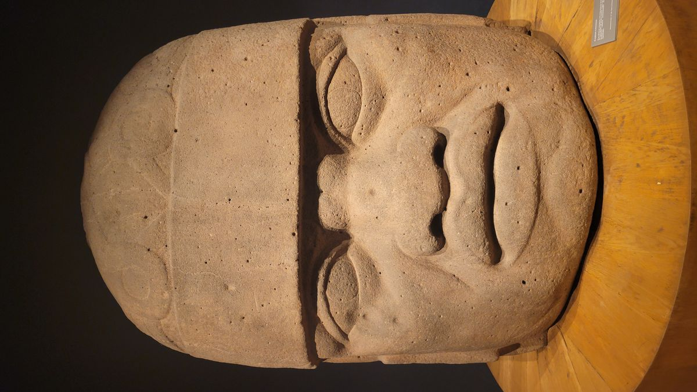

I would say Mexico City is underrated, but I think the cat has been out of the bag about this city for a while now. I do think that people don’t give it enough consideration when looking for large world class cities to visit though. London, Paris and Rome are all high on peoples bucket list of travels, but Mexico City seems to always be an afterthought. A, “well that would be nice someday”, but never making concrete plans. Its proximity to the United States and ease of access (which should get easier now that a new airport has opened on the outskirts of the city and is adding new routes constantly) make it more convenient than people realize. The city’s world-class museums and attractions are on par with its counterparts across the globe. It’s practically a living museum as new archaeological sites are being discovered across the city regularly.
I could write another half-dozen posts about what I did and saw in this Amazing city but, I would be even further behind than I am now. I’m writing this more than 2 weeks after I’ve left. So, I will just leave a few photos about my final days in the city and encourage everyone to plan a trip to CDMX sooner, rather than later.


